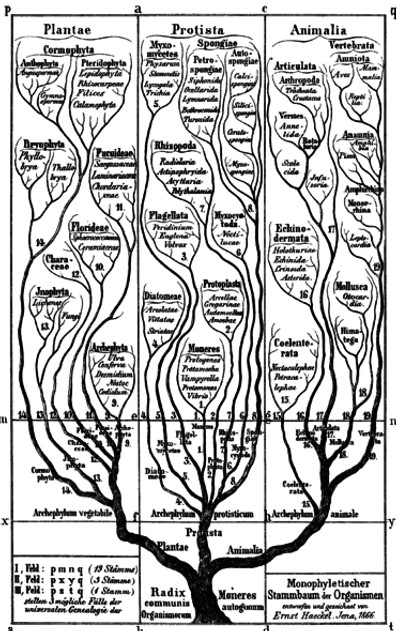

6 Story of Biology
About 3.8 billion years ago, certain molecules collided with one another to form larger, more complex molecules that ultimately formed large and intricate structures called organisms. This story of how organisms formed is called Biology.
The history of science and shows that no one science is isolated from another. For instance - genetics has progressed due to mathematics, biochemistry, and even computer science (i.e., bioinformatics).
6.1 What is Biology?
The word Biology is derived from the Greek words “bios” (meaning “life”) and “logos” (meaning “study” or “knowledge”). Hence, Biology is the study of living organisms.
It also involves many other techniques such as Chemistry, Physics, or Mathematics.
Biology also overlaps with Medicine to a great extent.
6.1.1 Characteristics of Living Organisms
All living organisms will share the following characteristics:
Movement
All living organisms exhibit some form of movement.
Reproduction
All living organisms come from pre-existing generations and can give birth to the following generation.
Reproduction can take many forms (i.e., asexually or sexually). DNA - among many other molecules - are involved in reproduction. DNA contains “instructions” for cellular structures and ultimately, for the whole organism.
Sensing
All living organisms will have some sort of response towards stimuli from the outside world.
These responses can be slow or fast.
Respiration
Everything that an organism does is governed by chemical processes (that consume energy). The energy to do work often comes in sugars, amino acids, and other biochemical processes - during which produces ATP.
Excretion
Biochemical reactions often result in the production of toxic waste products - these products are disposed via a method called excretion.
Plants often store their waste.
Nutrition
Organisms obtain energy from food or from other sources - these sources provide energy that is needed for purposes such as cell growth, cell maintenance, and cell repair.
Autotrophs take in simple, inorganic substances to turn into complex organic substances - these organisms are sometimes called producers. Plants - along with algae and phytoplankton - are the most familiar kind of autotrophs. Most autotrophs use photosynthesis to produce their own food.
Heterotrophs take in ready-made substances - these organisms are known as consumers. Dogs, birds, fish, and humans are examples of heterotrophs; they occupy the second and third levels in a food chain.
Detrivores (e.g., worms, fungi, and insects) obtain nutrition via consuming detritus: dead organic matter.
The food chain is a diagram that contains three trophic levels: autotrophs (first level), herbivores (second level), and carnivores and omnivores (third level).
Growth
Organisms grow by taking outside substances and incorporating it into its internal structure in a process called assimilation.
6.1.2 Divisions of Biology
Traditionally, there were two: Zoology (the study of animals) and Botany (the study of plants). Over time, the following divisions appeared:
Microbiology
This is the study of microorganisms - this division can be divided into two more sub-divisions: bacteriology and virology.
Anatomy
This is the study of plants’ and animals’ structures.
Biochemistry
This is the study of chemical processes that underlie plant and animal life.
Cell Biology
This is the study of cell function and structure.
Ecology
This deals with the relationships of organisms and their environments.
Evolution
This deals with how organisms evolve over time.
Genetics
This is the study of genes, genetic variation, and heredity among living organisms.
Entomology
This studies insects.
Ornithology
This studies birds.
Herpetology
This studies reptiles.
Mycology
This studies fungi.
Ichtyology
This studies fish.
Malacology
This studies molluscs.
Paleontology
This studies fossils and what they tell us about the ecologies of the past, about evolution, and about our place (as humans) in the world.
6.2 The Sun
Almost all life on Earth depends on the sun to survive.
\[\begin{equation} 6CO_2 + 6H_2O \longrightarrow C_6H_{12}O_6 + 6O_2 \end{equation}\]
Plants and some microbes use the sun’s light to perform photosynthesis. In the above photosynthesis equation, light energy is used to combine carbon dioxide with water to form a mole of glucose.
In most plants, the leaf is where photosynthesis occurs: the palisade cells are where most photosynthetic activities occur. Chloroplasts are photosynthetic organelles - their job is to absorb light for photosynthesis.
6.2.1 Chlorophyll
Chlorophyll is a pigment that absorbs and reflects specific wavelengths of light - these are also “light harvesting complexes”.
The most common kinds of chlorophyll are Chlorophyll A and Chlorophyll B. What separates them is their absorption spectrum.
6.2.1.1 Discovery of Chlorophyll
Chlorophyll was found in 1817 by Joseph Bienaimé Caventou and Pierre Joseph Pelletier.
70 years after the discovery of Chlorophyll C, Harold Strain and Winston Manning found Chlorophyll D in 1943.
Chlorophyll F - the latest chlorophyll discovery - was found by scientists at the University of Sydney by professor Min Chen’s group.
6.2.1.2 Tree Loss Rates
15.3 billion trees are cut down each year - the tree-to-person density ratio is about 422:1 for now.
The global amount of trees has fallen by 46% since the start of human civilization.
6.3 Origins of Life
“It is often said that all the conditions for the first production of a living organism are present, which could ever have been present. But if (and Oh! what a big if!) we could conceive in some warm little pond, with all sorts of ammonia and phosphoric salts, light, heat, electricity, etc., present, that a protein compound was chemically formed ready to undergo still more complex changes, at the present day such matter would be instantly devoured or absorbed, which would not have been the case before living creatures were formed.”
– Darwin in a letter to Joseph Dalton Hooker, 1871
80 years later, Harold Clayton Urey used research on planetary conditions to show how interactions between the atmosphere and the oceans may have produced a “primordial soup”.
In 1953, Stanley Lloyd Miller - inspired by a lecture given by Urey - wanted to cook up the “soup” in a lab. Miller was skeptical - he gave Urey a budget of under 1000 dollars.
6.3.1 Urey-Miller Experiment
In this experiment, a flame boils the “ocean water” to simulate evaporation. The steam travels through an atmospheric flask that contains hydrogen, methane, and ammonia.
An electric spark at 60000 volts produced lightning while a second glass condensed the vapor and made it “rain” back down.
Within less than a week, the clear liquid darkened - Miller analyzed the soup and found five amino acids. He published his results in May 15, 1953 and he made global headlines.
6.4 Spontaneous Generation
“Insects come into being spontaneously”
– William Harvey (Exercitationes de Generatione Animalium, 1651)
Spontaneous Generation is the idea that living organisms can originate from non-living organisms.
Back in the days, it was believed that frogs, eels, mice, and other such organisms could arise spontaneously.
6.4.1 Francesco Redi’s Experiments
In 1668, Redi carried out some experiments to show that maggots come from fly eggs, not rotting meat.
At that time, it was believed that maggots in rotting meat was evidence of spontaneous generation.
Redi placed jars of meats in open air - one of them was covered in a fine muslin cloth. Redi saw that while flies of that particular jar would never get to the meat, they would still lay eggs on the cloth, hence disproving spontaneous generation as their origin.
However, Redi still thought that some insects like gall flies arose by spontaneous generation.
6.4.2 Pasteur’s Work
He carried 20 sterilized, sealed flasks high up in the Swiss Alps and opened them there.
Another set of flasks were also brought to the dusty streets of Paris. Only one flask in the Swiss Alps produced convincing proof of Pasteur’s position.
Pasteur’s work is recognized today as crucial in large scale effective control of disease.
If organisms spontaneously generated in decaying organic matter or other places, it would be very difficult to stop their natural formation unless one of the necessary ingredients, which was only hypothesized and never confirmed, was removed.
6.4.2.1 Pasteur’s Swan Neck Experiment
Pasteur’s experiment went as such:
- Nutrient broth was poured into two flasks: an open necked flask and a swan necked flask.
- Both broths were boiled to kill existing microbes
- The broths were then left open and allowed to cool
In the end, microbes in the air reached the opened flask, but were caught in the layer of moisture in the swan-necked flask’s neck. The former flask turned cloudy while the latter remained clear.
Pasteur’s swan-necked design allowed air to pass into the flask, but the curved neck trapped any airborne microbes that might contaminate the broth.
6.4.3 Practical Implications
If only life begets life, then it is only a matter of preventing life from reaching the organism which one wants to prevent from becoming contaminated.
This is the purpose of sealing food in air tight containers or for destroying the organisms which spread disease by methods that are strong enough to destroy most microorganisms, but not their host (e.g., cooking).
This technique is the ordinary and primary method used today to control germs, and thus disease.
The spontaneous generation controversy continued for several years after the work of Pasteur with scientists who advocated grasping at every possible straw to save it. A London physician, Henry Charlton Bastian (1837–1915) published a two-volume work entitled The Beginning of Life where he cited difficulties with Pasteur’s experiments.
6.5 Taxonomy
This is science of naming, describing and classifying organisms and includes all plants, animals and microorganisms of the world.
Using morphological, behavioural, genetic and biochemical observations, taxonomists identify, describe and arrange species into classifications, including those that are new to science.
In the past 250 years of research, taxonomists have named about 1.78 million species of animals, plants and micro-organisms, yet the total number of species is unknown and probably between 5 and 30 million.
6.5.1 Species Problem
“No other species displays such diversity as the dog.”
– Karen Lange, Wolf to Woof
All dogs belong to the species Canis lupus familiaris, yet there are still many species.
The establishment of kennel clubs in the 1800s accelerated the process of artificial selection by encouraging new breeds. Most breeds established since 1900 were created for the sake of appearance.
6.5.2 Why Study Taxonomy?
Taxonomy helps us provide unique names for species and help us ensure that two different people are talking about the same organism. The Latin “scientific” name is given as a unique universal identifier.
6.5.2.1 Modern Taxnomic Process
Taxonomists begin by sorting specimens into sets that they think represent species.
They then go through the specimens to see if a specimen already has a name or not1.
These comparisons may also involve external characteristics, DNA analysis, or internal structure analysis too.
If no match is found, then a description has to be written, including ways that the species can be distinguished from other species. A new name (and one that is properly formatted) must also be formed.
This entire process can be length - it can take years.
6.5.3 Carolus Linnaeus
“Now the Lord God had formed out of the ground all the wild animals and all the birds in the sky. He brought them to the man to see what he would name them; and whatever the man called each living creature, that was its name. So the man gave names to all the livestock, the birds in the sky and all the wild animals.”
– Genesis 2:19-20
Carolus Linnaeus was born at Stenbrohult, in the province of Småland in southern Sweden on 23 May 1707.
In 1727, he studied medicine at the University of Lund, and a year later, he transferred to the University of Uppsala, where he spent time collecting and studying plants.
At the time, training in botany was part of the medical curriculum, for every doctor had to prepare and prescribe drugs derived from medicinal plants.
6.5.3.1 Expedition to Lapland
In 1732, Linnaeus made an expedition to Lapland, the northernmost region of Sweden, with the objective of finding new plants, animals, and possibly valuable minerals.
In 1735, he completed his medical degree at the University of Harderwijk, and published the first edition of his classification of living things, the Systema Naturae.
Returning to Sweden in 1738, he practiced medicine (specializing in the treatment of syphilis) and lectured in Stockholm before being awarded a professorship at Uppsala in 1741.
At Uppsala, he restored the University’s botanical garden (arranging the plants according to his system of classification), made three more expeditions to various parts of Sweden, and inspired a generation of students.
He was instrumental in arranging to have his students sent out on trade and exploration voyages to all parts of the world: nineteen of Linnaeus’s students went out on these voyages of discovery.
His most famous student, Daniel Solander, was the naturalist on Captain James Cook’s first round-the-world voyage, and brought back the first plant collections from Australia and the South Pacific to Europe.
Anders Sparrman, another of Linnaeus’s students, was a botanist on James Cook’s second voyage.
Another student, Pehr Kalm, traveled in the northeastern American colonies for three years studying American plants.
Yet another, Carl Peter Thunberg, was the first Western naturalist to visit Japan in over a century. He not only studied the flora of Japan but taught Western medicine to Japanese practitioners.
Still others of his students traveled to South America, southeast Asia, Africa, and the Middle East. Many died on their travels.
6.5.3.2 Swedish Economy
Linnaeus was also deeply involved with ways to make the Swedish economy more self-sufficient and less dependent on foreign trade, either by acclimatizing valuable plants to grow in Sweden or by finding native substitutes.
Unfortunately, Linnaeus’s attempts to grow cacao, coffee, tea, bananas, rice, and mulberries proved unsuccessful in Sweden’s cold climate.
6.5.4 Comparisons Between Kingdoms
“A few years ago Miss [Agnes] Joaquim, a lady residing in Singapore succeeded in crossing Vanda hookeriana and Vanda teres, two plants cultivated in almost every garden in Singapore.”
– Henry Nicholas Ridley (1855 - 1956)
Singapore’s national flower (i.e., the Papilionanthe) was bred by breeding two common household orchids together.
6.5.5 Ernst H. Haeckel

The two-kingdom classification was adopted for a very long period in history of biological sciences.
However, invention of microscope during the 16th century made it possible to explore the living world, which was not earlier possible to explore through the naked eye.
This exploration revealed an altogether new world of microorganisms sharing features of both plants and animals.
For example, Euglena are single-celled flagellated microorganisms that feature both plant and animal characteristics.
On the other hand, fungi have plant-like features such as immobility, irregular shape and indefinite growth but also posses heterotrophic mode of nutrition, a characteristic feature of animals.
Therefore such microorganisms could not have appropriate placement in two-kingdom classification.

In order to classify these microorganisms, Ernst H. Haeckel, in 1866, proposed a three-kingdom classification in which he added a new kingdom – Protista.
In this new kingdom he included all simple microscopic living organisms such as bacteria, microalgae, protozoa, fungi and sponges.
6.5.6 Robert Whittaker
Robert Whittaker worked on the area of classification, and developed three-kingdom, four-kingdom, and five-kingdom classification systems.
His five-kingdom classification system, which he published in 1969, is featured in many biology textbooks.
The five kingdoms defined by him were named Monera, Protista, Fungi, Plantae and Animalia.
6.5.6.1 Carl Richard Woese’s Domains
In 1990, Carl Richard Woese (1990) suggested further rectification in system of classification.
Relying on the information gathered with the help of various techniques of molecular biology about different prokaryotes he proposed a revision.
In this classification, a new level – the domain – was introduced as the top category.
This taxonomic system is known as a three-domain classification that includes domains – Bacteria, Archaea and Eukarya.
6.6 Anatomy
Democritus of Igisistratos or Athinocratos or Damasippos was born in Abdera, Thrace, Greece around the 80th Olympic Games, 460 to 457 BC. Serafini states 470 BC as the year he was born.
Among his students he had Mitrodorou of Chios, whose student was in turn Hippocrates from Kos. Democritus is also mentioned as being the teacher of Hippocrates who later treated him as a patient.
He came from a rich family. Later in his life, the people of Abdera tried Democritus in public and he was charged for spending the fatherly fortune.
When he read them his works Great décor and On vulvar explaining that he spent the money on that, he was cleared.
Democritus is considered an erudite and a scientist with multiple interests, one of the most famous Greeks of his time, whom Sextus Empiricus compared with the voice of God Zeus. He is referred to as polyhistor (he who has a great and varied learning) and gelastinos (he who laughs at everything).
6.6.1 Democritus’ Stance on Anatomy
Democritus’ views regarding the issue of human nature and anatomy are depicted in a letter he sent to Hippocrates of Kos.
The accuracy of his knowledge regarding the anatomy of the human body is explained by the plethora of dissections he had carried out, which results from his own writings.
However, historians’ opinions on whether Democritus actually practiced cadaver dissection are contradictory. French historian Bouillet (1883) wrote:
“Democritus dedicated long hours to dissection; his successors accused him of living in graves. True it was not, because he was never able to dissect human bodies”.
– Bouillet
Galen has left what has been called an abominable testimony, that Democritus used human parts and blood. Galen’s testimony therefore is in favour of the possibility that Democritus had actually practiced human dissections.
6.6.2 Aristotle
Aristotle was born in Stagira, on the peninsula of Chalcidice in 384 BC.
Later, he became the tutor of Alexander the Great, who was then 12. In about 336 BC, Alexander departed on his Asiatic campaign, and Aristotle, who had served as an informal adviser since Alexander ascended the Macedonian throne, returned to Athens and opened his own school of philosophy, the Lyceum.
Alexander wrote books on zoology, astronomy, botany, poetry, drama, metaphysics, physics, ethics and other topics.
While Plato distrusted the sphere of the senses, Aristotle did not. Like Plato, Aristotle conceded the role of the intellect in the acquisition of learning, but he regarded the senses as no less significant.
This to him, the physical cosmos was as vital as the spiritual, and was equally deserving of study.
Not surprisingly, Aristotle wrote a number of volumes devoted specifically to physics and biology (e.g., De Animalia, or On the History of Animals).
6.6.2.1 Aristotle’s Views on Taxonomy
“Animals may be characterised according to their way of living, their actions, their habits, and their bodily parts.”
– Aristotle
Aristotle was interested in categorising all life-forms. Many consider him the inaugurator of systematic taxonomy in the style of Linnaeus.
Using behaviour and native habitat as a guide, he divided all beasts into land animals, animals that always live in the water (e.g., fish), and animals that live periodically in the water, but reproducing on land (e.g., otter, alligators, and beavers).
Aristotle’s classification system had two principal divisions, the Genos and the Eidos. Genos signified broad categories of animals, such as a mammal, while Eidos referred to specific kinds of animals within the Genos, such as cats, horses, tigers, and so forth.
Alexander the Great sent him most of the material he needed for his studies.
Although his theories and specific classifications have altered considerably, several of the fundamental tenets still influence contemporary biology.
6.6.2.2 Aristotle’s Views on Reproduction
Aristotle distinguished between sexual and asexual reproduction. The latter, he believed occurred via “spontaneous generation”.
In line with later thinking, Aristotle believed spontaneous generation occurred primarily in more primitive animals, such as fleas and mosquitoes, which could arise, spontaneously from decaying substances.
Aristotle was the first to realise that that mother and the father were of equal weight in the creation of a new organism.
6.6.2.3 Aristotle and the “Vital Force”
Aristotle concluded that the heart controlled the flow of blood and was also the source of “animal heat” – the conviction that an undetectable, non-physical “force” keeps animals alive.
What distinguishes animate from inanimate matter, such as a rock, is precisely that the latter does not have the “vital force” while the former does.
In 1928, Friedrich Wöhler demolished the concept of vitalism when he synthesized urea (CH4N2O) in his laboratory.
6.6.3 Galen of Pergamum
Galen was born in 131 in the city of Pergamum in Asia Minor. Although born a Greek, he later moved to Rome, fell in love with Roman culture, and even altered his name to the more Roman Claudius Galenus.
After his philosophical training, Galen began to study medicine, first in Corinth, and later in Alexandria.
He returned to Pergamum in 158, becoming a court physician at the city’s school for gladiators. He then headed for Rome, where he began teaching science. There, he gained a reputation in medicine and became the personal physician of Marcus Aurelius.
Galen also treated quite ordinary people – not only the wives, children, and slaves of the rich, but the peasants he encountered in the countryside, friends of friends he met in the street, and the miscellaneous patients who walked or were carried to the clinic he operated in his home. He claims have provided his services for free.
Because of this, he became a public figure, known and recognized by many, accosted in the streets, challenged to debate, accompanied everywhere by a crowd of friends, supporters, students, domestic servants, and professional assistants.
6.6.3.1 Galen’s Speculations
Galen used the pulse to diagnose illness, although he had no understanding of the circulatory system. He put together an encyclopedia of medical knowledge, relying heavily on Aristotle.
For the circulation of blood, he described the aorta and the primacy veins of dogs, pigs, sheep and other animals.
His discussions of the digestive system are an interesting blend of fact and fiction. He claimed that the stomach had a mysterious force called “transformation power”, which allowed it to digest food.
To pursue his anatomical ideas, Galen examined creatures of every imaginable species. He was unafraid to perform vivisection (dissecting a living body), except on human beings.
His descriptions of the circulatory system dispelled the myth that the left chamber of the heart contained air. Although he had no grasp of the importance of oxygen in physiology (Joseph Priestley only discovered oxygen in 1774), he did in a way anticipate this view when he defended the tenet that there was some hitherto undiscovered element in the blood which was the basis of life. Oxygen is, of course, this element.
6.6.3.2 Galen’s Misshaps
Galen made mistakes in his anatomy. He maintained (mistakenly) that both veins and arteries carried blood away from the heart, and that the wall between the left and right ventricles were porous, allowing blood to pass between them. He also claimed that the liver was the “seat” of the venous system.
Cultural taboos prevented Galen from dissecting human bodies, forcing him to rely on animals – a deficiency he candidly acknowledged and one that led to numerous errors.
6.6.4 Leonardo da Vinci
Leonardo was born in the village of Vinci, near Florence, in 1452. Many historians surmise that he actually dissected as many as thirty corpses in his youth.
He recorded his commentary in the form of notes and drawings, of which 4,000 pages are still extant.
Leonardo’s finely detailed drawings helped others make headway in understanding the muscular and skeletal systems, and the relationship between them.
6.6.4.1 Leonardo’s Work in Anatomy
Anatomists in Leonardo’s time often dissected unclaimed bodies, such as of drunks and vagrants, and those bodies were more likely to be male.
Studying them would have been obnoxious work because they didn’t have any form of embalming, and within two or three days, the body decomposes.
Because of this, Leonardo’s illustrations of human anatomy are uncannily accurate with just one major exception: the female reproductive system.
Many of his drawings of the female reproductive system get details wrong.
6.6.5 Andreas Vesalius
Andreas Vesalius (née Andries van Wesel) was born in 1514 in Brussels.
He studied at the University of Louvain (1529 - 1533), then at the University of Paris (1523 - 1536).
While in France, he took lessons from Jacobus Sylvius, an ardent Galenist and famous physician in his own right, who later came to oppose bitterly his student’s anatomical discoveries that denied the preeminence of the ancients.
Finally, he transferred to the University of Padua – the premier medical university of the era – to complete his doctorate in December 1537.
6.6.5.1 Vesalius’ Dissections
Uniquely for the era, Vesalius insisted on the importance of actual dissection, by both teacher and pupil, when learning anatomy.
His position afforded him time to study the human body. Vesalius began his anatomical studies shortly after assuming his Chair at Padua.
He personally dissected cadavers and encouraged / forced his students to do the same. Bodies typically came from the gallows or fresh graves.
The local magistrate courteously timed Padua’s executions around Vesalius’ needs.
It was this hands-on engagement that enabled Vesalius to master the subject and make his portentous discoveries. While a professor, he published several texts and a dissection manual for his students that portended his magnum opus.
Vesalius’ investigations culminated with his 1543 publication of De Human Corporis Fabrica Septem Libri, or Seven Books on the Fabric of the Human Body. A second edition, significantly revised and dramatically improved, appeared in 1555.
6.6.5.2 Vesalius’ Seven Books
His seven books covered the following (in order):
- The human skeleton
- Musculature of the human body
- Vasculature of the human body
- The human body’s nerves
- The human body’s gastrointestinal system
- The human heart and lungs
- The brain
It was 663 pages, with 83 plates containing 420 illustrations, of which the “muscle men” remain the best known.
Scholars have debated for centuries who actually created the figures, with the artists Titian (c. 1488/90-1576) and van Calcar (c. 1499-1546) as leading contenders.
Most medieval and early modern anatomy texts lacked any illustrations and relied on written description to portray the human body.
Vesalius’ images, in addition to their artistic beauty, illuminated the subject of anatomy for students and facilitated its mastery.
Their seamless integration within the text set a new standard for the field. Moreover, he initiated a trend, furthered by subsequent anatomists such as Fallopio, Eustachi, and Albinus, who likewise filled their works with gorgeous and useful images, a practice continued by Netter and other modern anatomists.
6.6.6 Plastination
In July 1977, Gunther von Hagens was working as a research scientist at the University of Heidelberg’s Institute of Pathology and Anatomy.
Looking at specimens embedded in plastic – the most advanced preservation technique then available – he wondered why the plastic was poured around bodies rather than into them.
He came up with the idea of vacuum-impregnation, whereby bodily fluids are drained and soluble fat are extracted and replaced with resins, silicon rubbers and epoxies – a process taking a year.
“In the beginning, I thought plastination would mainly contribute to improving medical teaching.
But the huge subsequent lay interest inspired me to create public exhibitions – not to shock people, but capture their imaginations.”
– Gunter von Hagens
He named the process plastination. After a year of intense research, and hundreds of experiments, he filed the first patent for plastination, a technique now used in 400 medical schools and universities worldwide, in March 1978.
6.6.6.1 Public Displays
The first Body Worlds exhibition, featuring whole body plastinates, was shown in Japan in 1995.
The displays feature healthy and diseased body parts as well as skinned, whole corpses in assorted poses – a rider atop a horse, a pregnant woman reclining.
In 2018, von Hagens is suffering from Parkinson’s disease, and has requested to be plastinated when he dies, and become a permanent part of the Body Worlds exhibition.
The Body Worlds exhibition was held in Singapore in 2003 and in 2009.
The “The Cycle of Life” exhibit was excluded from the Singapore exhibition because it included copulating cadavers.
Critics have denounced von Hagens’ work as disrespectful to the dead, others are appalled that dead bodies are used to make money. There was also controversy about the origin of his specimens. He has stated that the bodies of executed Chinese prisoners has not been used.
6.7 William Harvey and the Heart
William Harvey was born in Folkestone, Kent on 1 April 1578. His father was a merchant. Harvey was educated at King’s College, Canterbury and then at Cambridge University.
He then studied medicine at the University of Padua in Italy, completing his studies in 1602.
Harvey married Elizabeth Browne, daughter of Elizabeth I’s physician, in 1604. In 1607, he became a fellow of the Royal College of Physicians and, in 1609, was appointed physician to St Bartholomew’s Hospital.
Through his teachings and observations, Harvey began to develop a new theory to explain how blood flowed through the body.
He conducted thorough research, including numerous dissections of human beings and as many as 40 animal species.
Harvey pored over the results before compiling them and publishing his groundbreaking Exercitatio anatomica de motu cordis et sanguinis in animalibus (On the Motion of the Heart and Blood in Animals) in 1628.
Only about 70 pages long, it became a gigantic milestone.
6.7.1 Heart Transplantation
The most controversial and famous operations of the twentieth century – human heart transplantation – was first performed by the South African surgeon Christiaan Neethling Barnard on 3 December 1967.
Popular twentieth-century histories often single out this surgical endeavour as a great or defining moment in world history, as important as the moon-landing of 1969. On par with space travel, it has been frequently used to symbolise human ability and medical achievement.
The first heart transplants were as much media as medical events.
On the afternoon of Saturday, 2 December 1967, a car collided with a mother and daughter who were crossing a Cape Town road. The mother died instantly and her daughter, Denise Darvall, was left critically injured and unconscious. A motorist passed by the scene, unaware that the accident was irrevocably going to change her own family’s life.
She was on her way to visit her husband, dentist Louis Washkansky, who was in the nearby Groote Schuur Hospital suffering from end-stage cardiac disease. By 6 the next morning, Denise Darvell’s heart was beating inside Louis Washkansky’s chest. Christiaan Barnard, from the Groote Schuur Hospital, had led a team in conducting the first ever human-to-human heart transplant.
“The young Republic of South Africa is rightly very proud of the magnificent feat achieved by a medical team at Groote Schuur Hospital in performing the first successful transplant of a human heart. The claim “successful” can be used even at this early stage because to date, it is a feat which makes medical history, no matter how short the further survival of the patient might be.”
– South African Medical Journal
Louis Washkansky died on 21 December 1967, eighteen days after receiving the heart of Denise Darvall.
6.7.2 Gaspare Tagliocozzi
In 1597, Gaspare Tagliacozzi, a professor of surgery at the University of Bologna, published De Curtorum Chirurgia per Insitionem, an illustrated guide that documented for the first time a technique for performing a rhinoplasty, or nose job.
“We restore, repair, and make whole those parts which nature has given but fortune has taken away, not so much that they delight the eye, but that they buoy up the spirit and help the mind of the afflicted.”
– Tagliacozzi
Tagliacozzi improved the reconstructive surgery methods that had been developed in Italy in the 1400s and 1500s to repair noses which had been amputated, usually in war.
6.7.2.1 Riducling Tagliacozzi’s Grafts
The Catholic Church judged that he had been tampering with the will of God and excommunicated him. Grafts became an object of ridicule. In 1909, the Boston Medical and Surgical Journal noted that by the eighteenth-century rhinoplasty “sank into disuse and in course of time began to be considered impossible or fabulous.”
In the subsequent centuries, reconstructive techniques improved, but the principle remained the same. Tissue used to repair a wound had to be taken from the patient’s own body. Otherwise, the immune system would attack and destroy it!
6.7.2.2 “Uniqueness” of Individuals
“The singular character of the individual entirely dissuades us from attempting this work on another person. For such is the force and power of individuality, that if anyone should believe that he could accelerate and increase the beauty of union, nay more, even achieve even the least part of the operation, we consider him plainly superstitious and badly grounded in the physical sciences.”
– Tagliacozzi
The Venetian adventurer Nicolò Manuzzi (1639– 1717) settled in India and left a travelogue manuscript, published much later, in which he records that he had seen many natives with restored noses.
Manuzzi had acquired some surgical skills and was asked to repair a nose but to use a slave donor for the skin.
Manuzzi replied that “it would be of no avail, for being another’s flesh it would not unite”.
“Concerning homoplastic transplantation (allografts) of organs such as the kidney, I have never found positive results to persist … whereas in autoplastic transplantation (autographs) the results was always positive. The biological side of the question has to be investigated very much more and we must find out by what means to prevent the reaction of the organism against a new organ.”
– Alexis Carrel to Theodor Kocher
No one, though many experiments have been reported, has yet succeeded in keeping an animal alive for any great length of time which carried the kidney or kidneys of another animal after its own kidneys were removed.
The outlook is by no means hopeless and the principles of immunity, which yield such brilliant results in many other fields, would seem to ne worthy of being tested in this case.
6.7.3 Cyclosporin
In 1969, Sandoz biologist Hans Peter Frey, collected a soil sample which contained the fungus Tolypocladium inflatum (Beauveria nivea), from Hardangervidda, a national park in Norway. Sandoz encouraged employees to collect such samples on business trips and holidays to search for new antibiotic drugs from fungal metabolites.
The immunosuppressive effect of cyclosporine was discovered on 31 January 1972 by employees of Sandoz (now Novartis), in a screening test on immune suppression designed and implemented by Hartmann Stähelin.
The extraordinary commercial success of cyclosporin is due to its immunosuppression and absence of cytotoxicity.
Among 170 liver transplants between 1967 and 1980, Thomas Starzl’s team reported only a 30% 1-year survival rate. Roy Calne’s series of 130 liver transplants between 1968 and 1983 achieved similar results.
It was apparent that acute and chronic rejection of the donor liver by the host immune system remained a major clinical problem that was limiting the efficacy of liver transplantation.
In 1978, Calne and others obtained extremely encouraging experimental results using cyclosporin in animal organ grafts, which was followed shortly by introduction into human transplantation.
Three years later, Starzl reported a doubling of the 1-year survival rate of liver transplant recipients to about 60% using cyclosporine and prednisone for immunosuppression after liver transplantation.
Between January 1, 1988 and April 30, 2012, 115,458 liver transplants were performed in the USA alone. The 1-year survival of a liver transplant patient has improved to 85%–88%, and the 5-year survival is ∼74%.
6.8 Blood Types
Research on blood transfusion began in the 17th century with the English physician William Harvey while carrying out experiments on blood circulation. The very first transfusions were done with animal blood and were fatal to the receivers.
It was only at the very beginning of the 20th century that the Austrian physician Karl Landsteiner (1868-1943) discovered that humans belonged to different blood types, which he coined A, B and C – later to become A, B and O.
In 1902, his colleagues Alfred Decastello and Adriano Sturli discovered the fourth blood type: AB.
In 1907, an American doctor named Reuben Ottenberg successfully transfused blood between two people at Mount Sinai Hospital in New York.
Ottenberg also discovered that people with type O blood are “universal donors”, which means that their blood will be accepted by people with any of the four ABO system blood groups.
6.9 Diabetes and Insulin
Diabetes mellitus is a chronic disease where the body does not make or does not use insulin properly, resulting in having too much sugar in the blood.
Sugar comes from the food we eat. The body needs sugar to make energy.
The amount of sugar in the blood of a normal person is closely controlled by a substance called insulin, which is made by the pancreas. People with diabetes either do not produce enough insulin or the insulin produced does not work well. As a result, sugar builds up in the blood.
Diabetes is one of the most studied diseases in the history of medicine.
Diabetes was first described in Ancient Egypt around 1552 BC (the Ebers Papyrus). Ever since then, physicians around the world tried to test and treat the “sugar sickness”, as it was called. However, with insulin still unknown, diabetics were doomed to waste away.
Doctors in Egypt, India, and Greece all watched as the patients they desperately tried to save inevitably fell into comas and died. Indian physicians called it madhumeha (‘honey urine’) because it attracted ants.
6.9.1 Where are the Pancreas?
The pancreas is a long, flattened gland located deep in the abdomen. The pancreas contains exocrine glands that produce enzymes important to digestion.
The islets of Langerhans create and release important hormones (insulin and glucagon) directly into the bloodstream.
6.9.2 Types of Diabetes
Type I Diabetes
Persons with Type 1 diabetes cannot control their blood sugar properly because their pancreas produces little or no insulin. They need insulin injections to control their blood sugars. It usually happens to young people.
Type II Diabetes
About 80% of all persons with diabetes belong to this group. They can produce insulin, but their body does not use it effectively. It is often the result poor diet and a sedentary lifestyle.
6.9.3 Statistics in Singapore
About 9% of the adult population in Singapore have diabetes. 90% of people with diabetes are over 40 years old.
Some risks of diabetes mellitus include:
- Family history
- Overweight
- More than 40 years of age
- Pregnancy
- Exposure to a trigger mechanism (a virus or chemical substance)
Among the major ethnic groups in Malaysia, Indians (24.9% in 2011 and 19.9% in 2006) had the highest prevalence of T2D, followed by Malays (16.9% in 2011 and 11.9% in 2006) and Chinese (13.8% in 2011 and 11.4% in 2006).
These epidemiologic differences could be due to the genetic makeup, diet, and cultural variants among these major ethnic groups.
6.9.4 Origin of the word “Diabetes”
The term “diabetes” was probably introduced by the Greek physician Demetrius of Apamea or by Aretaeus of Cappadocia (129-199 AD).
Later, the word mellitus (honey sweet) was added by Thomas Willis (Britain) in 1675 after rediscovering the sweetness of urine and blood of patients (first noticed by the ancient Indians).
In 1776, the Liverpool physician Matthew Dobson firstly confirmed the presence of excess sugar in urine and blood as a cause of their sweetness.
Diabetes is a wonderful affection, not very frequent among men, being a melting down of the flesh and limbs into urine. The course is the common one, namely, the kidneys and bladder; for the patients never stop making water, but the flow is incessant, as if from the opening of aqueducts.
The nature of the disease, then, is chronic, and it takes a long period to form; but the patient is short-lived, if the constitution of the disease be completely established; for the melting is rapid, the death speedy. Moreover, life is disgusting and painful; thirst, unquenchable; excessive drinking, which, however, is disproportionate to the large quantity of urine, for more urine is passed; and one cannot stop them either from drinking or making water.
6.9.5 Pre-Insulin Era
Characterised by the efforts of controlling diabetes by means of bizarre pharmacological treatment such as the use of opium or dietary interventions, based on the conviction that diabetic patients should eat extra-portion for compensating their endocrinological and metabolic impairment.
However, some physicians began to notice that it was fasting and not an excess of calories to improve the clinical symptoms of diabetes. They introduced dietary restrictions such as “Bouchardat’s treatment” or “starvation diets”.
6.9.5.1 Paul Langerhans
In 1869, Paul Langerhans made the first careful and detailed description of the microscopic structure of the pancreas. He described nine different types of cells including small, irregularly shaped, polygonal cells without granules, which formed numerous cell heaps measuring 0.1 to 0.24 mm in diameter, throughout the gland. Langerhans refrained from making a hypothesis as to the nature and importance of these cells. In 1893, the French histologist GE Languesse named these spots “ilots de Langerhans”.
In 1875, Langerhans moved to the island of Madeira because of pulmonary tuberculosis, but he did not stop his scientific work.
He continued his zoological studies of the fauna of the Canary Islands and Madeira, and wrote a handbook for travelers to the island.
Langerhans was also interested in his own disease and published two papers on tuberculosis.
In Madeira he practiced medicine in the capital, Funchal, where in 1888 he died of a kidney infection.
6.9.6 Diabetes Cases and Treatments
The below cases were common:
Case 1
A man in his late fifties began to have severe pain in one of his toes, causing constant suffering and loss of sleep. Then, it began to turn black. His family doctor confirmed the diagnosis of diabetes which he himself had feared, since a brother and several members of his family had been diabetic.
A surgeon, consulted in the hope that the gangrenous toe could be amputated, was unwilling to operate. He stated that, with diabetes, healing would fail to occur. The man was bedridden for months as the gangrene extended into his foot. Finally death came to end his suffering.
Case 2
A young girl with diabetes in an early stage, was treated with the Allen “starvation diet” then in vogue. Introduced by Dr. Frederick Madison Allen, and promoted by Dr. Elliott Proctor Joslin, dietary restriction of extreme degree was then the chief hope for juvenile diabetics. The results for this girl at first appeared successful, but suddenly diabetic coma developed, and she was gone.
In 1889, two German researchers, Oskar Minkowski and Joseph von Mering, discovered that removing a dog’s pancreas (total pancreatectomy) would provoke severe symptoms of diabetes.
They begun the speculation that a mysterious substance produced by the pancreas is responsible for metabolic control.
In 1907 a Belgian investigator Jean de Meyer proposed it be named “insulin”.
The discovery of insulin at the University of Toronto by in 1921-22 was one of the most dramatic events in the history of the treatment of disease.
On December 2, 1921, Leonard Thompson, 14, arrived at the emergency of Toronto General Hospital.
He weighed just 30 kg (as he had been on a “starvation diet”), and his life hung by a thread. His diabetes had been diagnosed two years earlier.
Thompson’s father let the hospital try Banting and Best’s new pancreatic extract for the first time.
On January 11, 1922, Leonard Thompson became the first patient with diabetes to receive insulin injections.
After an impure form of insulin failed to improve Leonard’s condition initially, a purer version restored his blood glucose levels back to normal and his symptoms began to disappear.
Two weeks later, on 23 January 1922, Leonard underwent a second series of insulin injections and the results were stunning. His life was, literally, saved by insulin and he became the poster boy of the now commonplace medical miracle.
When Leonard was aged 27, 13 years after his first insulin injections, he died of pneumonia, which was thought to be a complication of his diabetes.
6.9.7 Controversy over Nobel Prize
In 1923, Frederick Banting and John MacLeod were awarded the Nobel Prize for Physiology or Medicine. The prize aroused a lively and debated controversy.
In 1955, the British biochemist Frederick Sanger managed to fully sequence the bovine insulin and discovered its exact composition in terms of amino-acids. For this discovery, Sanger won the Nobel for Chemistry in 1958.
For the discovery of the physical structure of insulin, the English biochemist Dorothy Mary Crowfoot-Hodgkin (1910–1994), a pioneer in the protein X-ray crystallography, was awarded the Nobel Prize in Chemistry in 1964.
6.10 Insect Metamorphoses
Jan Swammerdam was born on 12 February 1637 in Amsterdam. He qualified as a medical candidate in October 1663.
After obtaining his doctorate, Swammerdam concentrated mainly on the study of insects. The purpose of Swammerdam’s work on insects and other lower animals was to refute the Aristotelian idea that these were imperfect animals, by systematically contradicting the Aristotelian arguments that they lacked internal anatomy, originated spontaneous generation, and developed through an abrupt metamorphosis.
William Harvey proposed that the insect egg contains so scarce nutrients that the embryo is forced to hatch before completing development.
Then, during the larval life, the animal would accumulate enough resources to reach the pupal stage, which Harvey considered as the perfect egg.
Swammerdam showed that the pupa is not a sort of egg but a transitional stage between the larvae and the adult. He classified insect metamorphoses into four main types.
6.10.1 Types of Metamorphoses
There are four kinds:
Type I
Insects that grow without transformation (lice were his example)
Type II
In a second type, he included the species that develop the wings progressively and that transform into adults without any intermediate, quiescent stage (as crickets and cockroaches).
Type III
Represented by species whose wings develop under the larval cuticle and that undergo a quiescent pupal stage before transforming into adults (as in butterflies and beetles)
Type IV
Species that pass the pupal stage under the skin of the last larval stage (represented by flies)
6.10.2 Textbooks on Insects
Although refined and completed with many examples, Swammerdam’s categories are essentially the same as the one used today.
Ametabolans, which do not experience morphological transformations along the biological cycle.
Hemimetabolans, which hatch as nymphs with a morphology similar to that of the adult and grow progressively until the adult stage, which gain full flying wings and functional genitalia.
Holometabolans, which hatch as a larva morphologically very different from the adult, then progressively grow through successive moults until the last larval instar, after which they moult into the pupal stage, often quiescent and similar to the adult, and then to the adult stage, with flying wings and fully formed and functional genitalia.
6.11 Vitamins
Gelatin (also called gelatine) is an animal protein prepared by the thermal denaturation of collagen, isolated from animal skin and bones, with very dilute acid. It can also be extracted from fish skins.
Chemically, gelatin is a heterogeneous mixture of single or multi-stranded polypeptides. More about this in a later lecture (on biochemistry)!
For now, let’s go back to Paris in the early 1800s. Philanthropists were seeking ways to feed the poor. Chemists discovered that gelatin could be extracted from leftover bones.
So they came up with an idea – people of means could consume the meat, while the poor would receive a gelatin broth. However, the poor revolted against the unappetizing broth.
The authorities appointed a committee, the Gelatin Commission, to evaluate gelatin. After ten years of research, the Commission concluded that gelatin was not a complete food.
By the late nineteenth century, the prevailing dogma held that there were four essential elements of nutrition: proteins, carbohydrates, fats, and minerals.
6.11.1 Cause of Disease: Germ Theory
Germ theory, that diseases are caused by infectious organisms or toxins produced by these organisms became the reigning principle in science.
Louis Pasteur (1822 – 1895) and Robert Koch (1843 – 1910) were influential proponents of the germ theory of disease.
Investigations identified the organisms responsible for anthrax, malaria, tuberculosis, cholera, leprosy, and diphtheria.
Other diseases such as scurvy, beriberi, rickets, and pellagra – considered by some to be infections – continued to baffle scientists.
“Scurvy and rickets are conditions so severe that they force themselves upon our attention; but many other nutritive errors affect the health of individuals to a degree most important to themselves, and some of them depend upon unsuspected dietetic factors …”
– Frederick Gowland Hopkins
In a speech in 1906, Frederick Gowland Hopkins stated that “… no animal can live upon a mixture of pure protein fat, and carbohydrate, and even when the necessary inorganic material [i.e., minerals] is carefully supplied the animal still cannot flourish.”
“Mice can live quite well under these conditions when receiving suitable foods (e. g., milk), however, as the above experiments demonstrate that they are unable to live on proteins, fats, carbohydrates, salts, and water, it follows that other substances indispensable for nutrition must be present in milk …”.
– Nicolai Lunin
Carl Socin, demonstrated that there was an unknown substance in egg yolk that was essential to life, and he raised the question of whether this substance was fat-like in nature.
6.11.2 During the Seige of Paris
“Since no conscientious chemist can assert that the analysis of milk has made known all the products necessary for life … we must renounce, for the present, the pretension to make milk. … It is therefore always prudent to abstain from pronouncing upon the identity of these indefinite substances employed in the sustenance of life, in which the smallest and most insignificant traces of matter may prove to be not only efficacious, but even indispensable … The siege of Paris will have proved that we… must still leave to nurses the mission of producing milk.”
– Dumas
Many infants and toddlers died when the city was cut off from the milk supply of the countryside. Some opportunists tried to manufacture an artificial substitute for cows’ milk, but this artificial milk failed to sustain the infants. Many children died.
6.11.3 Vitamins
In 1912, Hopkins showed that young rats did not grow well when fed a basal ration of protein, starch, cane sugar, lard, and minerals. After a small amount of milk was added to the basal ration, they had normal growth. The unknown factors in milk that supported life were found in “astonishingly small amounts” and were termed “accessory factors” by Hopkins.
Casimir Funk (1884 – 1967) proposed the term “vitamine” instead of “accessory food factors” in 1912 for the deficient substances in the food as related to beriberi, scurvy, and pellagra.
In 1913, University of Wisconsin biochemist Elmer McCollum (1879–1967) was able to distinguish two different species of vitamins, which he called “fat-soluble factor A” and “water-soluble factor B.”
The announcements by Hopkins, Funk, McCollum and others sparked enormous worldwide interest in this new area of research. Over time, more vitamins were discovered.
This may be done through reading guides, reading descriptions from 200 years ago, or borrowing specimens from museums and whatnot.↩︎